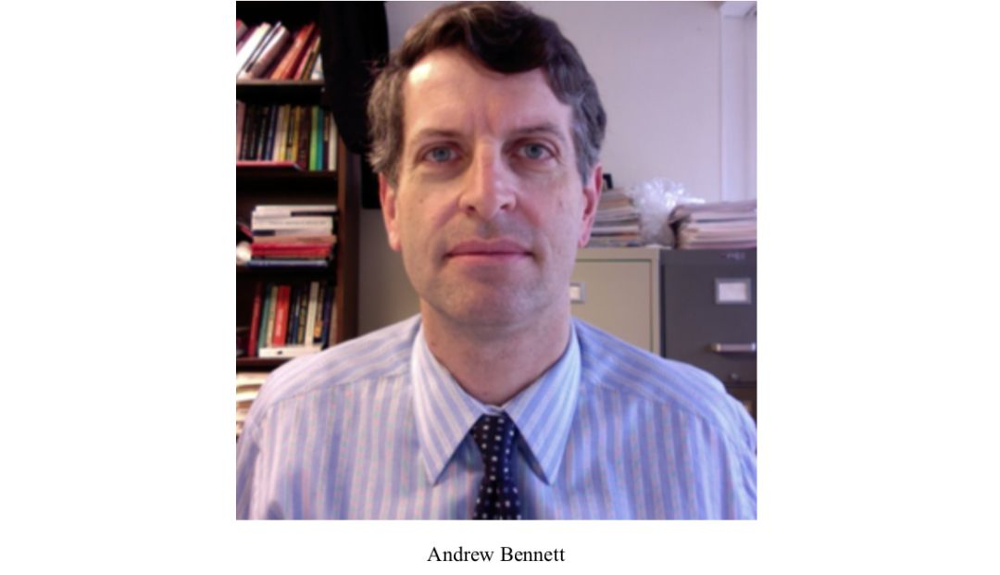
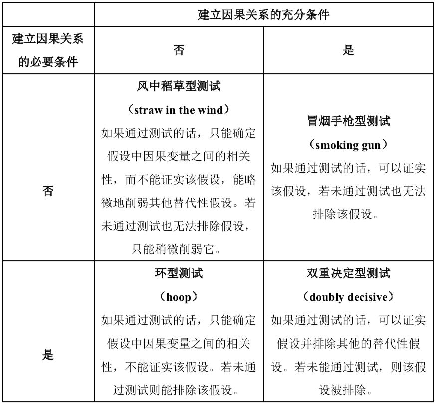

AndrewBennett：过程追踪和因果推论|政观编译
收录于合集
文章来源 ： Andrew Bennett，“Process Tracing and Causal Inference, ” in Henry Brady and David Collier, eds., Rethinking Social Inquiry , Rowman and Littlefield, 2010(second edition).
作者简介： Andrew Bennett，哈佛大学肯尼迪政府学院公共政策博士，曾在斯坦福大学和哈佛大学国际关系研究中心担任研究员，现为乔治城大学政府系教授。他的研究兴趣为美国外交政策、研究方法、地区冲突与维和等。他与Alexander George合著的Case Studies and Theory Development in the Social Sciences (MIT Press 2005)荣获2005年的Giovanni Sartori Prize，是当年关于定性研究方法的最佳著作。Andrew Bennett也是定性研究方法协会的联合创始人和会长。更多信息详见： ****https://gufaculty360.georgetown.edu/s/contact/00336000014TvltAAC/andrew- bennett

文章对过程追踪作为因果推论的工具之一进行了综述，主要聚焦于国际关系领域针对宏观议题的研究，并且以3个案例来说明过程追踪是如何有助于研究者在各个假设中判断哪个假设的解释更可信。这三个案例及其研究问题分别是：
（1）为什么英法两国在1898年的法绍达危机（Fashoda Incident）中没有诉诸武力？
（2）为什么在一战中期，尽管有显著的证据表明可能会战败，德国还是毅然决然地扩大了它的战争目标？（比如冒着把美国拖入战争的风险也要实行无限制的潜艇战）
（3）为什么苏联没有干涉1989年中东欧地区发生的民主化浪潮但是却对1956年匈牙利纳吉政府的改革和1968年捷克斯洛伐克杜布切克领导的改革进行了强烈的军事干涉？
关于过程追踪的综述
过程追踪通过对案例内的诊断性（diagnostic）证据的检验来支持或者推翻某一解释性的假设，主要关注的是假设的因果过程里的顺序和机制。研究者经常在比相关理论预期的层次更低的层次上寻找与假设相关的证据。这类分析与侦探寻找凶手和医生诊断疾病的过程相类似。过程追踪有助于解决定量分析中的2个困难。 第一是建立明确的因果方向， 定量分析只能确定变量之间的相关性，但是并不知道是X导致了Y还是Y导致了X。 第二是潜在的虚假关系。 如果X与Y是相关的，是因为X导致了Y，还是因为有第三个变量同时导致了X和Y？过程追踪能同时从结果出发分析潜在的原因，也能同时从假设的原因出发考察之后的结果，这能让研究者发现之前未能考虑到的变量。
针对过程追踪的批评主要有2个：无限回溯和自由度问题。King, Keohane 和Verba（KKV 1994）就认为过程追踪对细枝末节的过分关注可能会对因果机制链条里任何彼此相关联的部分进行无限的回溯。另一些人则担心定性研究中的案例数量太少而变量太多会面临自由度的问题。对上述两类批评的回应是：在过程追踪里，不是所有的信息在判断哪个假设更有解释力时都具有同样的证明价值（probative value）。研究者不需要详细地考察每个证据。重要的并不是证据的数量，而是证据对验证假设的贡献。更有甚者，单一案例也可能包含显著的证据。更具体而言，针对不同证明价值的证据，过程追踪内有不同类型的经验测试。Van Evera（1997）区分了四种类型的测试来确认或排除潜在的替代性解释（见下表1），对这4类测试的介绍也可以详见本公众号之前的推文【David Collier：理解过程追踪】，这些测试也被运用在了本文的案例分析中。作者强调这些过程追踪中的测试需要被大量的证据来检验，特别是在对政治和社会现象进行过程追踪时，因为参与行动者有着很强的工具性或者观念性的理由来掩盖或者曲解有关于他们的行为或者动机的信息。
表1: 建立因果关系的4种测试

案例1: 为什么法绍达危机没有引发战争
学者Schultz在分析1898年英国和法国之间的法绍达危机时为环型测试和冒烟手枪型测试提供了很好的例子。危机是由于英法两国争夺在尼罗河上游地区的势力范围而引起的。在过去几十年中，随着“民主和平论”的兴起，这一在两个民主国家间差点爆发战争的案例引起了学者们的研究兴趣。
针对为什么危机没有以爆发战争而结束，Schultz列举了学界内存在的三种替代性解释。首先新现实主义者认为，法国退缩了是因为英国的军事实力不管在全球层面还是在区域层面都远远强于法国（Layne 1994），Schultz反驳了这种说法因为它没有通过环型测试：它无法解释为什么危机会发生，并且持续长达2个月，近乎升级到要爆发战争的程度。因为很明显从一开始英国的军事力量就远强于法国。第二种解释是民主的规范和制度使得英法两国相互克制，这也没有通过环型测试。不管传统的民主和平理论如何强调民主规范和制度的约束作用，英国公众和领导人在整个危机时期都显示出了好战的态度。
最后，Schultz提出了他自己的解释：民主制度迫使民主国家的领导人更容易透露出关于其意图的保密信息，使他们在某些情况下很难虚张声势，但会让对方觉得使用武力的威胁是可信的。根据这种观点，当国内反对党和公众都支持领导人使用武力的威胁时，民主制度会增加这一威胁的可信度，但是如果国内群体都反对领导人使用武力的威胁时，民主制度会削弱这一威胁的可信度。对此，Schultz进行了冒烟手枪型测试。当时，英国反对党领导人支持英国政府控制尼罗河上游地区，使得英国对取得该地区控制权的公开承诺变得可信。同时，法国外交部长德尔卡塞（Théophile Delcassé）最开始摆出了一副不妥协的姿态，但是这一姿态的可信度很快被法国国内反对战争的声音所削弱。在英国展现出不惜一战的强烈意愿之后，法国很快退缩了。整个事件发生的顺序都如同该解释预测的一样，使得该解释通过了冒烟手枪型测试。同时，又由于其他的解释没有通过环型测试，所以使得Schultz的解释具有很强的说服力。
案例2：为什么德国在一战时扩大了其战略的目标和手段
第二个案例也运用了环型测试和冒烟手枪型测试来寻找哪种替代性解释能更好地说明为什么在明显要输掉一战时，德国还是在1916-1917年扩大了其战时策略的目标和手段。Goemans指出在1916年有4个形势的发展暗示德国将要输掉战争：德国在凡尔登战役中的失败；英国在索姆河战役中显示了它将战斗到底的决心；俄国在布鲁西洛夫攻势中展示出它仍然能坚持战斗；罗马尼亚加入了反对德国的战争。
针对德国为何在即将输掉战争时还扩大其战略的目标及手段，有5种替代性解释，Goeman分别对它们进行了评估。第一种解释是，德国是作为一个统一的行为体在行动，并且它仅仅考虑国际层面的因素。这一解释没有通过环型测试，因为有证据表明即使德国领导人自身明白他们已经很难取胜，德国的战争目标还是被扩大了。第二个解释是，德国已经无法挽回地想要通过战争来追求霸权，这一解释也被德国的战争目标一直在继续扩大的证据而削弱了。第三种解释是德国的独裁政府使得它成为了一个糟糕的学习者，对表明自己即将失败的迹象无动于衷。这一解释也被驳斥了，因为有大量的证据表明，在1916年末德国领导人非常明白自己取胜的几率很小。第四种解释是，德国军队领导人的变动改变了其军事目标。不过这个引发了另一个问题就是为什么德国要在战争中期更换自己的军队领导人。随后，Goeman检验了自己的假设，即当半独裁的政府相信他们将要输掉战争时，他们更倾向于实行那种有很大可能性会输掉战争的策略，只要那种策略依然保留有很小的可能性能使它们翻盘。Goeman认为，对在那种体制的政府领导人而言，通过谈判让步而使战争结束与输掉一场战争没有多大区别。因为在这两种情况下，领导人都可能会失去他们的权力和财富（甚至是生命）。所以，当有证据显示半独裁的国家将要输掉战争时，它的领导人就有动机采取冒险策略以博取机会渺茫的胜利。Goeman引用了有关德国军事领导人鲁登道夫的观点证据对这个假设进行了冒烟手枪型测试，并证实了该假设。鲁登道夫在其私人信件中表示即如果德国接受和平谈判，那么只有通过激进的国内政治改革才能平息国内民众的不满情绪。
案例3：冷战的和平结束
最后一个案例是为什么苏联在1989年没有武装干涉东欧国家的民主化？该案例同时运用了环型测试、冒烟手枪型测试和风中稻草性测试来判定哪一种解释最具说服力，有3个主要的解释。
第一种是现实主义的视角，认为是物质实力的变化导致了苏联对外战略的收缩。以Brooks和Wohlforth为代表的现实主义者认为，1980年代苏联经济增长放缓，加上苏联对阿富汗的武装干涉耗费了大量的国防开支，如果1989年苏联使用武力干涉东欧民主化的话，会使苏联花费大量的军事和经济成本，以及面临被西方制裁的风险，并且迫使苏联承担东欧国家的债务。
第二种是国内政治的视角，即关注苏联执政联盟的变化。这一视角以Snyder为代表，他认为苏联经济从以生产工业产品为主的粗放型发展转向以服务和信息密集型产品为主的集约式发展，使得苏联的执政联盟从军事/重工业者转向了轻工业者和知识分子，导致苏联寻求与西方改善关系以获取技术和开展贸易，而苏联若武装干涉1989年东欧的民主化将损害苏联与西方国家的经济关系。
第三种是观念的视角，认为苏联从之前在阿富汗的失败干涉中吸取了教训，并质疑使用武力解决政治问题的效力。
虽然学界普遍认为以上三种假设都有一定的道理，但是对哪种假设更具说服力却存在争议。Tannenwald（2005）提出了判断假设是否具有说服力的三个问题：（1）观念是否与苏联的需求、行动者的个人物质利益、个人经验以及他们所接触到的信息有关？（2）物质实力的变化是在观念变化的之前还是之后？（3）物质和观念因素哪个更好地解释了哪种思想最后胜出？上述3个问题都为过程追踪的测试创造了机会。
针对第一个问题。第一种假设通过了环型检测，因为有证据显示苏联领导人在公开和私下的谈话中都将苏联的经济问题和与西方国家之间的关系联系起来。不过Robert English（2002）认为用于环型检测的证据并没有那么充足，因为他发现有一些证据表明苏联保守派领导人反对戈尔巴乔夫的外交政策，这使得苏联外交政策的收缩看上去取决于戈尔巴乔夫个人的因素。另外2个环型测试则否定了第二种假设，支持了第三种假设。按照Snyder的说法，当时苏联军队的领导人确实反对削减国防开支，而且那些在1990年发动政变反对戈尔巴乔夫的苏联保守派也多是来自军队和重工业的联盟。但是这些保守派并不认为应当使用武力来避免华约的瓦解。事实上，军方领导人是最早对武力干涉阿富汗政局表示怀疑的人，并且许多参加过武力干涉阿富汗行动的重要官员都辞职了。这表明第三种视角，即苏联能从失败中汲取经验教训，成功地通过了环型测试。
针对第二个问题，关于物质变化与观念变化发生的顺序。第一种现实主义视角并没有提供具体的时间顺序，只是说从长期来看，物质动机会影响苏联的行为。1987年后，苏联经济严重下滑，在那时戈尔巴乔夫就已经给东欧各国政府发出讯号表明苏联不会使用武力干涉东欧国家的政治变革。所以苏联政策发生变化的时间并不能给第一种假设提供很强的支持，其证据表明这最多是一个风中稻草型测试。第三种观念的视角所暗示的苏联政策发生变化的时间更符合实际情况，因为有证据表明，苏联观念的变化先于其行为的变化。因此，第三种视角通过了环型测试。
针对第三个问题，第二种视角并没有通过环型测试。因为当该假设中所有能使斯大林主义联盟重掌政权的条件都具备时，斯大林主义者并没有占据上风。相反，有证据表明苏联国内的反干涉主义思想之所以盛行是因为苏联过往的经验而不是因为这类思想的倡导者们是物质实力强大的联盟，这使得第三种视角通过了环型测试。
除此之外，还有证据表明，第一种视角里认为苏联害怕承担东欧国家债务的推论不成立，因为有证据显示戈尔巴乔夫直到柏林墙倒塌之后才知道东欧国家背负的巨额债务，所以在面临这一证据时，物质实力的解释未能通过环型测试。
总而言之，第三种视角（观念因素）通过了三个环型测试，其解释力最强；第一种视角（物质实力）次之，通过了1个环型测试、1个风中稻草型测试，但它对东欧国家债务是苏联出兵的阻碍因素的解释没有通过环型测试；第二种视角的解释力最弱，它对政策观念和物质利益之间的关系以及哪种思想观念会盛行的预测都没有通过环型测试。
总结
通过过程追踪，如果有合适的证据，学者们就可以做出有价值的推论。“合适”意味某些证据相对于其他证据而言更具有证明价值。通过环型测试、冒烟手枪型测试、风中稻草型测试和双重决定型测试，证据必须有力地对各种替代性的解释进行鉴别。在这当中，重要的不是证据的数量，而是证据与假设之间的关系。过程追踪不是因果推论的灵丹妙药，因为所有进行因果推论的方法都有可能失败，但是在拥有合适的证据时，过程追踪确实是一个甄别各种替代性解释的有力工具。
【政文观止Poliview】系头条号签约作者
编译：施 榕
审读：杨端程
编辑：郭静远